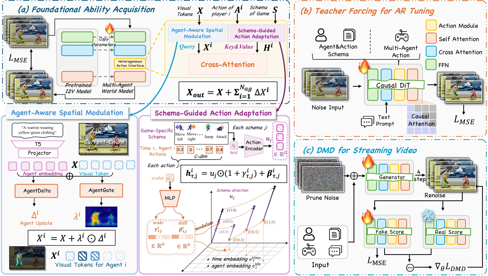
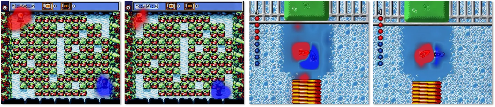
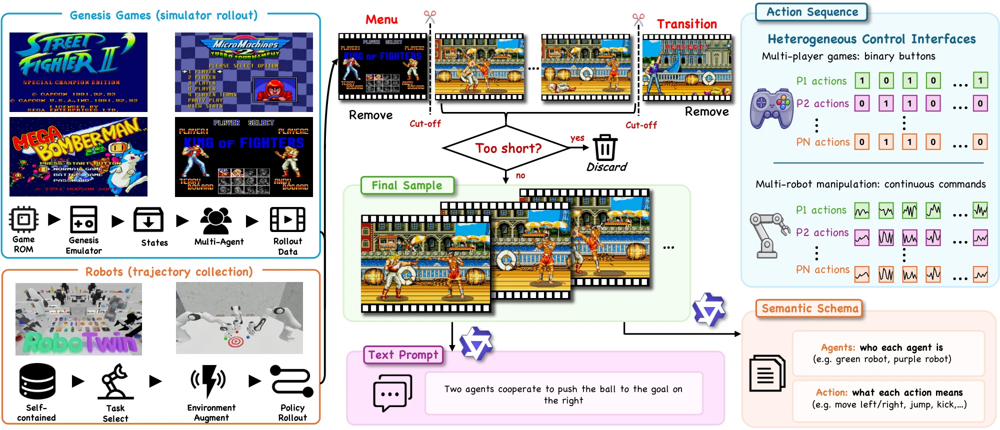
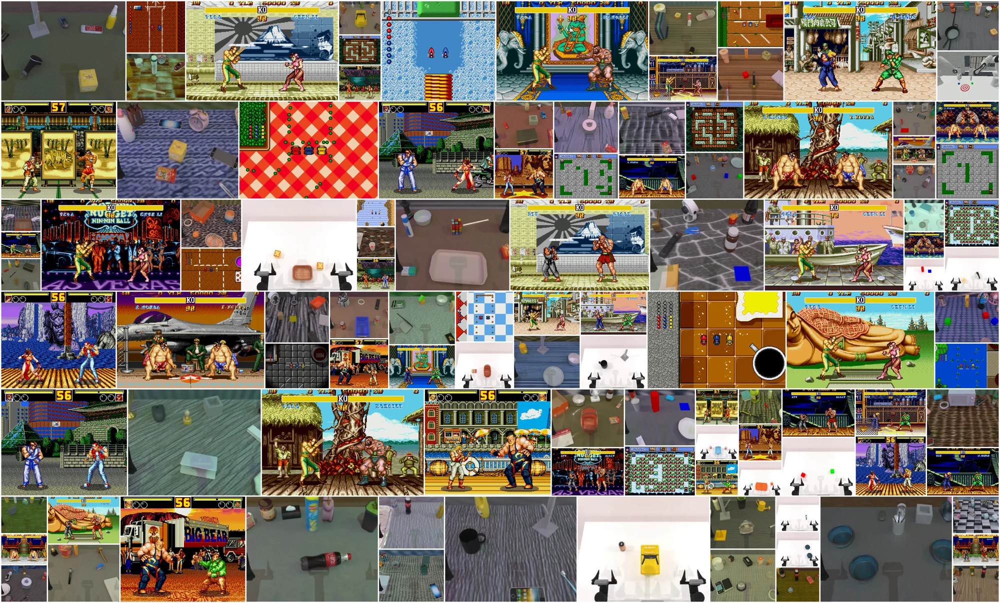

LiveAct Towards Real-Time Multi-Agent World Models with Heterogeneous Action Interfaces
One frame in, one action stream per agent, and LiveAct renders the shared future in which every stream moves its own agent. The streams can be game buttons or robot joint commands. A single model covers four games and two robot sources, and its causal version streams at 17.70 FPS.
Streaming at 512×448 on one GPU, four denoising steps per chunk.
Agent-attribution accuracy on games / robots, with no agent locations, masks, or identity crops.
On games, vs. 563.6 for the strongest baseline. On robots: 270.2 vs. 402.9.
17,951 multi-agent trajectories from four games and two robot sources.
Every stream moves its own agent
Each rollout starts from a single held-out frame and receives one action stream per agent. Drag the divider to compare LiveAct with the recorded ground truth; the timeline underneath plays the actions each agent received.
Street Fighter II
- Streams
- one per fighter
- Action type
- binary, 60 fps recordings
- Controls
- light punchlight kickupdownleftright
- Trajectories
- 5,460 · 45.50 h
Each fighter has its own stream. A punch on stream 1 must animate fighter 1, even when the fighters overlap.
Fatal Fury 2
- Streams
- one per fighter
- Action type
- binary, 60 fps recordings
- Controls
- standing punchstanding kickupdownleftright
- Trajectories
- 3,200 · 26.67 h
Same control layout as Street Fighter II, but different characters, stages, and move animations.
Micro Machines
- Streams
- one per car
- Action type
- binary, 60 fps recordings
- Controls
- steer leftsteer rightacceleratebrake or reverse
- Trajectories
- 2,150 · 17.92 h
Slot 10 means punch in the fighting games but accelerate here. The schema description tells the model which meaning applies.
Mega Bomberman
- Streams
- one per player
- Action type
- binary, 60 fps recordings
- Controls
- updownleftrightplace a bomb
- Trajectories
- 2,050 · 17.08 h
Players are small sprites on a large grid, so each stream has to find its own agent in a busy scene.
RoboTwin
- Streams
- one per arm
- Action type
- continuous
- Controls
- joint 0–6 targetsgripper open/close
- Trajectories
- 2,532 · 3.93 h
Robot clips sample 81 frames uniformly over the full episode, so each clip covers the complete manipulation.
RoboFactory
- Streams
- one per arm
- Action type
- continuous
- Controls
- joint 0–6 targetsgripper open/close
- Trajectories
- 2,559 · 8.44 h
The arms work on the same objects, so the model must keep each arm's motion separate while they interact.
More agents, same interface
Each additional agent adds one agent description and one action stream; the architecture does not change. Top: ground truth; bottom: LiveAct.
Micro Machines · boat race
one binary stream per boat
Mega Bomberman · full arena
one binary stream per player
RoboFactory · multi-arm stacking
one continuous stream per arm
More generations
LiveAct rollouts on further held-out clips from all six sources.
Two things an action tensor does not say
Stacking the agents' actions into one tensor keeps every number but loses two correspondences a shared video model needs: which visible agent a stream belongs to, and what each control dimension means in the current task.
Cross-agent misattribution
The stream index separates agent 1's actions from agent 2's, but gives no visual evidence of which fighter is agent 1. One stream's punch can land on the wrong fighter or spread over both.
Control-semantics collapse
Slot 7 is move right for a fighter, steer right for a car, and a continuous gripper command for a robot. A raw vector keeps the value but not the meaning; free text keeps the meaning but not the value.
A Heterogeneous Action Interface
LiveAct builds on Wan2.2-TI2V-5B. The HAI sits in each of the 30 transformer blocks, after text cross-attention and before the feed-forward layer. It splits action conditioning in two: the query side decides who responds, and the key–value side encodes what each control means and how much it is applied.

Agent-Aware Spatial Modulation
Each stream comes with a short agent description, such as “left-side player character Balrog”. The frozen umT5 encoder turns it into an identity vector, and a learned gate computed from every visual token decides where that identity is added.
The gate is soft and learned: no masks, boxes, or reference crops, in training or at inference.
x(i) = x + λ · AgentDelta(qi)
Schema-Guided Action Adaptation
Every control slot has a language description, such as “move upward on the Bomberman grid”. Its text embedding says what the control means; the value at each frame scales and shifts that embedding.
One token per slot per frame, so visual queries can attend to individual controls.
hτ,j = uj ⊙ (1 + γ) + β
Per-agent cross-attention
Agent i's modulated visual tokens query its own action tokens from the matching time interval. The residuals of all agents are summed into one shared visual state, keeping the agents consistent with each other and the scene.
Output projections start at zero, so training begins from the pretrained backbone.
One 12-slot vector, six meanings
All sources share a 12-slot control vector per agent. The same slot changes meaning across sources, which is why every slot carries its own schema description. Hover a cell for the exact text.
From a bidirectional teacher to real-time streaming
The full interface stays in place while the generator is converted to blockwise causal attention and then distilled on its own rollouts. Each latent keeps reading the controls of its own time interval as the KV cache advances.
Foundational Ability Acquisition
- Bidirectional teacher, full-video context
- 10k steps
- 50 denoising steps, CFG 5.0
Teacher Forcing for AR Tuning
- Blockwise causal attention over 4-latent chunks
- Each chunk denoised from clean preceding chunks; 6k steps
- 50 denoising steps, CFG 5.0
DMD for Streaming Video
- Distribution matching on the model's own rollouts
- Frozen teacher as the real score; 700 iterations
- 4 denoising steps per chunk, no CFG
Throughput measured at 512×448 on a single GPU.
Right action, right agent
All methods run on the same 108 held-out clips (78 game, 30 robot). Act-F1 and NRMSE come from frozen inverse-dynamics models trained only on real clips. Attr-Acc is a swap test: a frame counts as correct when the recovered controls match the commands better in the commanded agent order than with the two agents exchanged, so chance is 0.5.
Agent attribution
Game action following
Robot command error
Full comparison table · reconstruction, control, and diagnostics
| Reconstruction | Control | Diagnostics | ||||||
|---|---|---|---|---|---|---|---|---|
| Method | FVD ↓ | LPIPS ↓ | PSNR ↑ | SSIM ↑ | Act-F1 ↑ / NRMSE ↓ | Attr-Acc ↑ | MME ↓ | Aesthetic ↑ |
| Multi-agent video games | ||||||||
| LingBot-World 2.0 | 1256.6 | 0.322 | 13.25 | 0.490 | 0.146 | 0.553 | 0.57 | 5.093 |
| MultiWorld (1-view)a | 2661.4 | 0.719 | 10.40 | 0.125 | 0.163 | 0.548 | 2.67 | 4.059 |
| Incantation | 1989.5 | 0.593 | 10.45 | 0.226 | 0.162 | 0.534 | 8.77 | 4.539 |
| ActionParty | 1672.5 | 0.272 | 14.56 | 0.467 | 0.086 | 0.547 | 0.47 | 4.974 |
| WanToFight-styleb | 563.6 | 0.136 | 17.67 | 0.671 | 0.241 | 0.552 | 0.23 | 5.192 |
| LiveAct (ours) | 338.5 | 0.086 | 20.17 | 0.743 | 0.594 | 0.898 | 0.15 | 5.207 |
| Multi-robot manipulation | ||||||||
| LingBot-World 2.0 | 2732.5 | 0.603 | 7.13 | 0.464 | 1.106 | 0.665 | 4.20 | 3.570 |
| MultiWorld (1-view)a | 1748.9 | 0.276 | 15.36 | 0.797 | 1.099 | 0.357 | 1.90 | 4.054 |
| Incantation | 3053.3 | 0.820 | 3.93 | 0.185 | 1.119 | 0.459 | 17.37 | 3.710 |
| ActionParty | 1661.7 | 0.267 | 15.42 | 0.816 | 1.142 | 0.504 | 1.90 | 4.035 |
| WanToFight-styleb | 402.9 | 0.188 | 17.32 | 0.831 | 0.758 | 0.886 | 0.42 | 4.037 |
| LiveAct (ours) | 270.2 | 0.106 | 20.51 | 0.871 | 0.558 | 0.942 | 0.42 | 4.085 |
a Native MultiWorld uses synchronized multi-view observations; we run it with one fixed view. b The code is not released; this is our reproduction, trained on the same mixture as LiveAct.
Side by side with the baselines
Same first frame, same action streams. Language-serialized models tend to lose the conditioning scene or the action, per-agent numerical baselines blur the agents, and WanToFight-style keeps the scene but only partly follows the commands.
Both halves of the interface are needed
Without Agent-Aware Spatial Modulation (AASM) the queries are identical for all agents, and game Attr-Acc falls to 0.592. Replacing Schema-Guided Action Adaptation (SGAA) with a conventional flat action encoder, an MLP that maps each frame's full action vector to a single token, keeps the agent modulation, yet robot NRMSE rises to 1.120 and robot Attr-Acc falls to 0.484, near chance: queries can only route controls they can interpret.
Inside SGAA · schema description, per-dimension tokens, and value modulation
| Variant | Control token | Game Act-F1 ↑ | Game Attr-Acc ↑ | Robot NRMSE ↓ | Robot Attr-Acc ↑ |
|---|---|---|---|---|---|
| Full LiveAct | schema token, affine value modulation | 0.594 | 0.898 | 0.558 | 0.942 |
| w/o SGAA | one flat-MLP token per frame | 0.225 | 0.603 | 1.120 | 0.484 |
| w/o value modulation | schema token + additive value | 0.209 | 0.513 | 1.071 | 0.480 |
| w/o schema semantics | learned ID token, affine value modulation | 0.230 | 0.588 | 0.799 | 0.778 |
| Shuffled schema | mismatched descriptions at inference only | 0.207 | 0.504 | 1.063 | 0.496 |
Every variant keeps Agent-Aware Spatial Modulation, per-agent cross-attention, and the one-latent action window. Removing any one factor drops control to the level of removing SGAA; learned IDs keep part of the gain only on robots, where one index means the same control across sources.

Real-time distillation
Stage 3 reaches 17.70 FPS, 10.7× faster than Stage 2. On games, Act-F1 rises from 0.539 to 0.594 and Attr-Acc from 0.844 to 0.898 across the three stages, since each chunk is conditioned only on past context and the controls of its own frames. On robots, NRMSE rises from 0.430 to 0.558 and Attr-Acc falls from 0.969 to 0.942.
Beyond the training window
LiveAct trains on 81-frame windows. These 241-frame rollouts keep the stage, HUD, and agent identities over the full horizon, while small pose and position deviations build up in later frames. They are selected long-video cases, separate from the quantitative benchmark.

Multi-agent, one model
Four competitive multiplayer games and two collaborative multi-arm robot sources. Each sample pairs an initial frame and a scene description with synchronized per-agent action streams, agent descriptions, and a task-specific control schema.
Street Fighter II
Fatal Fury 2
Mega Bomberman
Micro Machines
RoboTwin
RoboFactory
Durations refer to raw recordings at native frame rates (games 60 fps; RoboTwin 30 fps self-collected and 50 fps augmented; RoboFactory 30 fps). Training and evaluation use 81-frame clips drawn from these trajectories.


What is not solved yet
- Two-agent benchmarkAll quantitative results use two-agent clips; scenes with more agents are shown qualitatively.
- Simulated robotsRobot data come from the RoboTwin and RoboFactory simulators; physical robots are not evaluated.
- Fixed control widthEach agent has 12 control slots; richer action spaces need a wider schema.
- Long horizonsPast the 81-frame training window, small pose and position errors accumulate.
Cite LiveAct
@article{wang2026liveact, title={LiveAct: Towards Real-Time Multi-Agent World Models with Heterogeneous Action Interfaces}, author={Wang, Xinyu and Shi, Huafeng and Ma, Yue and Meng, Zijie and Xi, Teng and Chen, Yuzhuo and Wang, Yucheng and Zhang, Ruicheng and Zhang, Guoxin and Wan, Pengfei and others}, journal={arXiv preprint arXiv:2610.29408}, year={2026} }